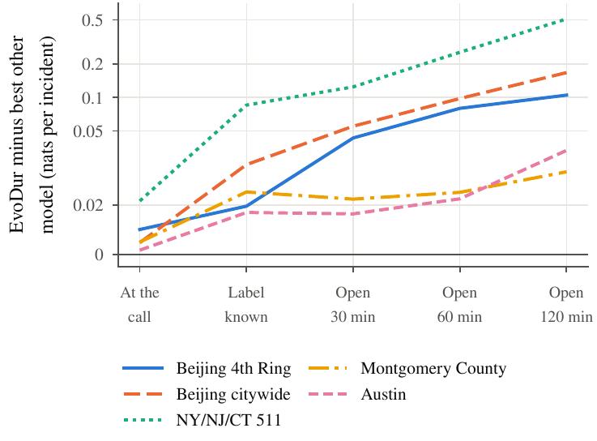
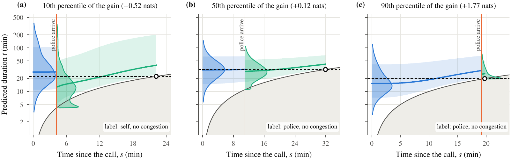

EvoDur: Updating traffic incident duration predictions as information arrives

Why EvoDur
Earlier work trains a new model for each stage of the response. EvoDur trains one call-time prior and one small module per type of evidence, and Bayes' rule gives the forecast for any combination of evidence. Nothing is refitted when information arrives, and an update takes about 2 ms on one CPU core.
EvoDur has the best log score at the call on all five datasets, and its lead over every other model grows as evidence comes in, reaching 0.51 nats per incident (a 66% higher predictive density at the true duration) for incidents still open after two hours.
Once the police have arrived, the single EvoDur model beats the stage-wise linear and gradient-boosting models of earlier work by 0.04 to 0.22 nats per incident in every fold, and it matches or beats a neural network trained separately for that state.
Abstract
A traffic management centre needs to know how long an incident will last as soon as it is reported, and it needs a sharper answer as the response unfolds. Current practice either fits a new model for every stage of the response or treats the clearance method as a cause that must be predicted at the call. We turn the classical competing-risk model around, modelling the duration first and the categorical label recorded during the response second, with neural networks for both parts. The resulting model, EvoDur, consists of a call-time prior and one small likelihood module per type of later evidence, such as the police arrival time, the label or the fact that the incident is still open, and Bayes' rule combines whatever evidence is available without refitting anything. The call-time forecast does not depend on the label model, and conditioning on elapsed time is at least as efficient as refitting. On five datasets from Beijing, the New York region, Montgomery County and Austin, EvoDur has the best log score of ten models at the call and once the label is known (34 of 35 folds), and its lead widens as evidence accumulates.
Method
The joint distribution of the duration T and the recorded label C can be written in two orders. Earlier competing-risk models put the label first, P(c | x) f(t | c, x), so the call-time forecast is a mixture over labels that are not yet known. EvoDur uses the other order, f(t | x) P(c | t, x). The label then becomes evidence about the duration, and any later information with a likelihood given the duration enters the same way:
f(t | x, e1, …, em) ∝ f(t | x) · p(e1 | t, x) · … · p(em | t, x)
The prior is a neural mixture of log-logistic AFT components. The evidence modules are a classifier for the label, a mixture density for the police response time (which must be shorter than the duration) and a truncation for the elapsed time. Each part is fitted once, and any subset of evidence is combined at prediction time.
Results
The lead grows with the evidence. At the call EvoDur and the strongest baseline are close, since both see only the call-time features. Each new piece of evidence widens the gap.

Log score per incident (held-out log-likelihood, higher is better), single networks, mean over folds.
| Dataset | Incidents | EvoDur, call | Best other, call | EvoDur, label known | Best other, label known |
|---|---|---|---|---|---|
| Beijing 4th Ring | 5,388 | −4.134 | −4.144 | −4.108 | −4.127 |
| Beijing citywide | 40,120 | −4.273 | −4.277 | −4.254 | −4.290 |
| NY/NJ/CT 511 | 206,009 | −4.734 | −4.755 | −4.719 | −4.804 |
| Montgomery County | 147,835 | −4.845 | −4.850 | −4.788 | −4.814 |
| Austin | 229,693 | −5.500 | −5.501 | −5.350 | −5.367 |

Data
Three benchmarks are public: the 511NY event feed (NY/NJ/CT, 2010–2015), and the police dispatch records of Montgomery County, Maryland and Austin, Texas (2017–2026). The code includes a script that downloads them. The Beijing data (2008) are available from the corresponding author on reasonable request, because of privacy restrictions of the Beijing Municipal Traffic Management Bureau.
Citation
@article{cao2026evodur,
title = {Updating traffic incident duration predictions as information arrives:
a neural competing-risk model with evidence modules},
author = {Cao, Xiaoyang and Liu, Zhiyong and Li, Ruimin},
journal = {Preprint},
year = {2026}
}